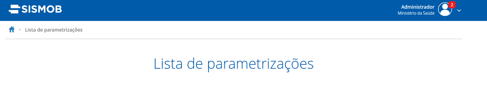
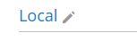

Classe: br.gov.sismob.view.impl.vaadin.components.Titulo
Descrição: Componente que representa o título centralizado de uma página
Exemplo:

Classe: br.ufsc.bridge.sismob.component.EditButton
Descrição: Componente que representa um botão de edição. Possui o ícone de lápis e o hint “Editar”
Exemplo:
